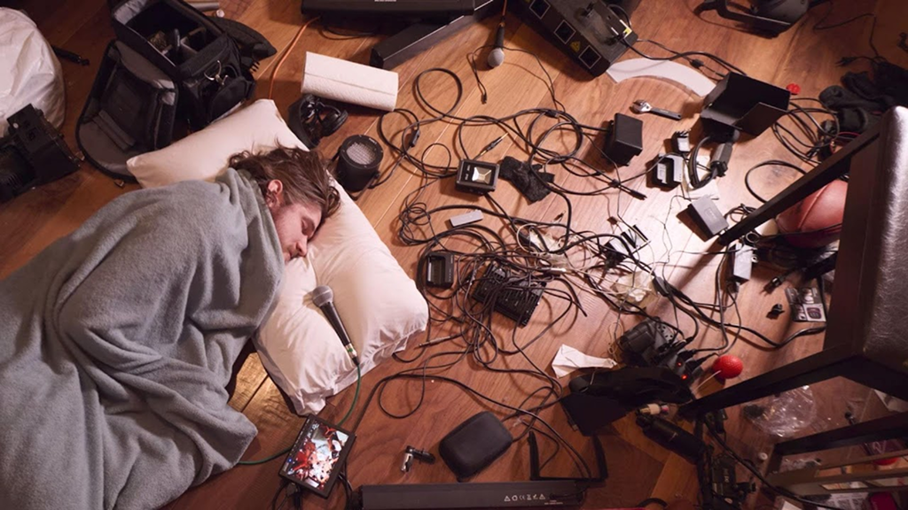

Seriously. Go watch it! If you're reading this, you might be interested in Bo Burnham, and you're missing his best work yet. Or you're interested in post-modern forms of communication, in which case, you're missing out on a prime example of post-modern work. Maybe you're reading this because you're obligated to in some way— Inside will give you a good laugh, and you deserve a break!
In any case, I strongly encourage you to watch Inside!

Burnham lays on the ground, surrounded with recording equipment, commenting upon how allowing media corporations to exploit children and flattening the human experience into marketable value is bad.
But I get it.
You're busy.
You don't have Netflix.
You're just here because you have to be.
Whatever the reason.
If you don't have time, here's a summary of Inside:
Comedian Bo Burnham wrote, sang, directed, starred in, produced, and edited a post-modern piece of cinematic mastery that takes place solely in (or in front of) his guest house. It's a collection of music videos, interspersed with "B Roll" footage of his creating the special (that also showing his deteriorating mental health) and "snippets" that aren't songs but rather parodies of common kinds of other videos (like directly thanking the audience for watching, commercials, interviews, live gaming feeds). Emerging during peak COVID-19 pandemic, Burnham satirically commentates upon serious systemic issues, like racism, classism, labor exploitation, destructive technological practices, societal norms that are questionable at best, among others—the very things that shouldn't be joked about (something he himself questions at the very beginning). This "comedy special" highlights themes of mental health, performativity, and the crumbling of society as we knew it.
If you want to see a wonderful compilation from the special, watch this unofficial, fan-made trailer that honestly does a fantastic job of capturing the tone and character of the film.
Okay, okay. Now that you're kind of caught up, go join the angsty people who already watched and worshiped Inside, the 2021 time capsule that it is. Representative of its time. Timeless for the rest of us.